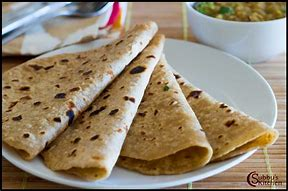

Chapatti

How to make a Chapatti from Home
We can't resist a warm chapati with our favourite curry. This traditional Indian side dish is easier than you think and only takes a handful of ingredients. Follow the steps indicated below to make a tasty chapati.
Below are the ingredients that you need and the step by step guide on how to make a tasty home made chapati.
Ingredients
- Wholemeal flour 140g
- Plain flour, 140g plus extra
- Olive oil 2 tbsp, plus extra
- Salt 2 tbsp
- Hot water 180ml
Steps to follow
- In a large bowl, stir together the flours and salt. Use a wooden spoon to stir in the olive oil and enough water to make a soft dough that is elastic but not sticky.
- Knead the dough on a lightly floured surface for 5-10 mins until it is smooth. Divide into 10 pieces, or less if you want bigger breads. Roll each piece into a ball. Let rest for a few mins.
- Heat a frying pan over medium heat until hot, and grease lightly. On a lightly floured surface, use a floured rolling pin to roll out the balls of dough until very thin like a tortilla.
- When the pan starts smoking, put a chapati on it. Cook until the underside has brown spots, about 30 seconds, then flip and cook on the other side. Put on a plate and keep warm while you cook the rest of the chapatis.